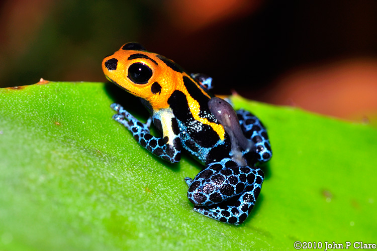

Welcome to The Jungle
Poisonus Frogs
Poison frogs are best known for their bright colors. These bright colors tell predators not to eat them because they are toxic. A poison frog has enough poison to kill 10 humans. So, they are very dangerous. they live in tropical forests in central America. These frogs measure to about 0.75 inches to 1.5. Although they are small their are one of the most toxic animals in their enviroment.. Their poison comes from what they eat only consiting of ants and termites.
